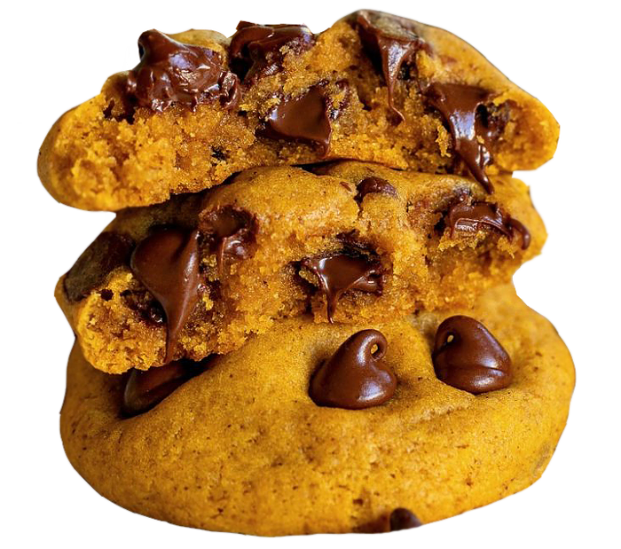
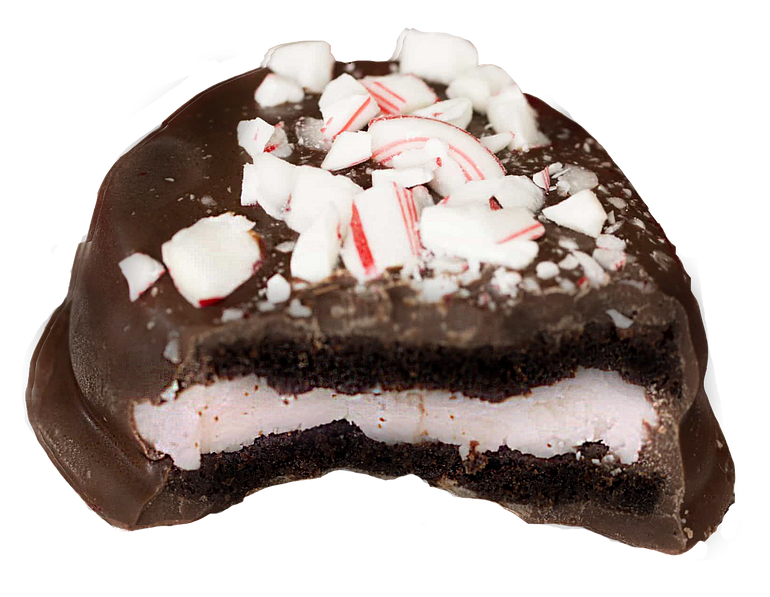
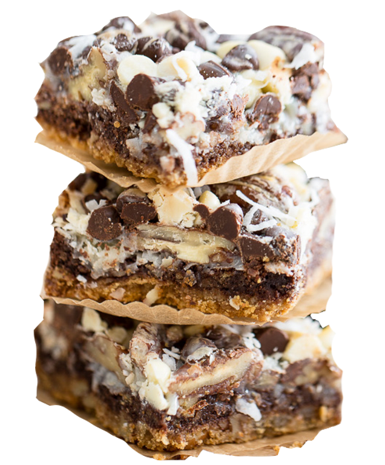
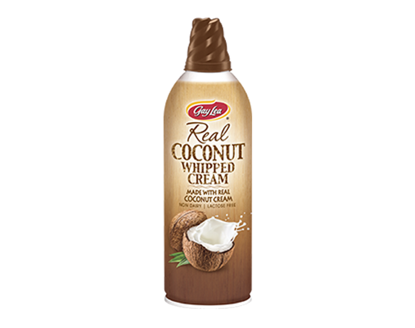
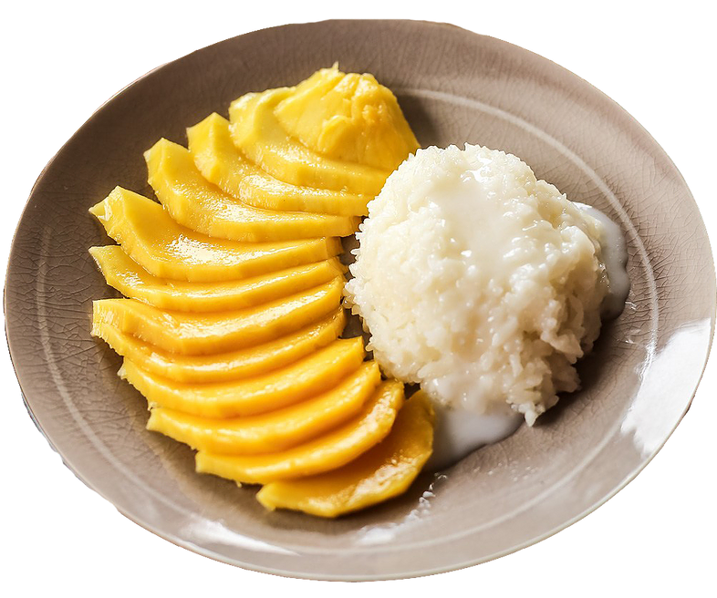
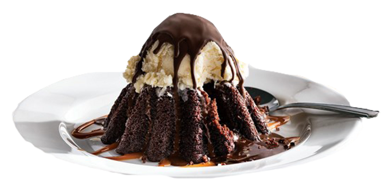
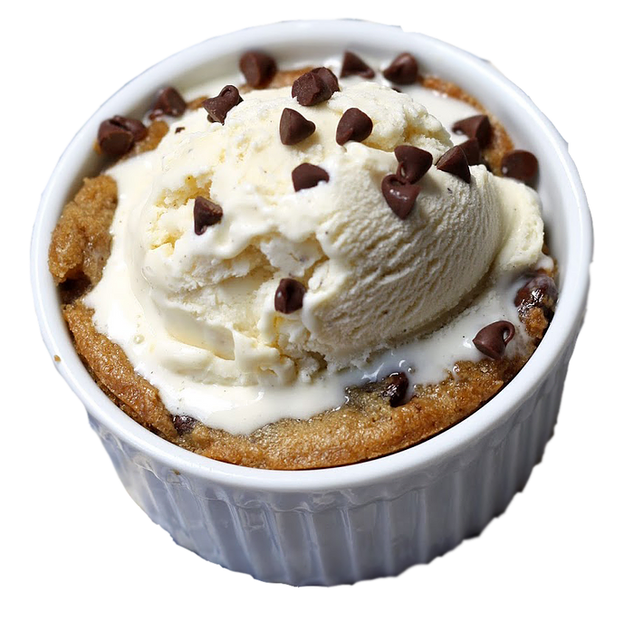
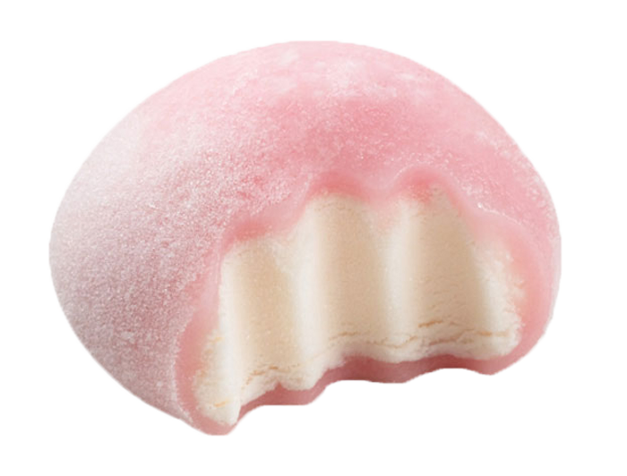
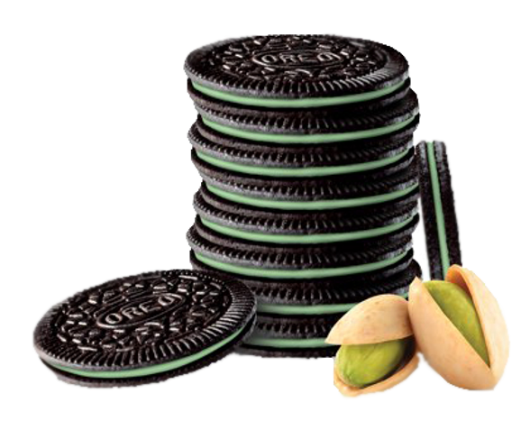
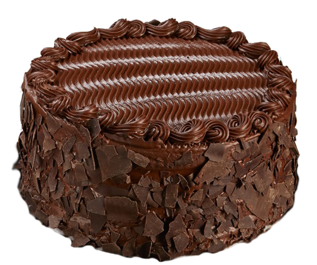

1.) PUMPKIN COOKIES.
That your mom made. But mostly from Smith's.
These are a really good treat because you can eat so many without getting full;
its like they disappear in your stomach like cotton candy. Which is good and good for you!

2.) Dark Chocolate Covered Peppermint Joe Joe's.
Trader Joe's has created a better version
of the peppermint Oreo. Pink, creamy frosting center sprinkled with candy cane bits squished
by two thick chocolate cookie wafers en-robed in a silky dark chocolate blanket. Also, if
you put one next to your ear it will give you a compliment.

3.) Magic Bars Or Hello Dollies.
All these bars consist of
is graham cracker, butter, chocolate chips, pecans, coconut flakes, and sweetened condensed
milk. Eat them plain, with ice cream, as cereal, and/or mash them up and use as chicken breading.

4.) Coconut Whipped Cream.
"CWC" as the kids on the street call it.

5.) Mango Sticky Rice.
Now I don't usually mix fruit with pleasure; however I make
exceptions for mostly all coconut-related treats as well as this mango/coconut concoction.

6.) Chili's Molten Chocolate Lava Cake.
I am fully-aware that this is a mediocre cake.
And filling. And ice cream. But it is FUN. Chili's is fun.

7.) Great Value (Walmart brand) Refrigerated Cookie Dough.
Let me tell you what to do
with this cheap goldmine. You mash and shape dough into your recently purchased ramekin.
You bake until personal preference. You then fill the cookie ramekin with Great Value Vanilla
Bean ice cream. Another treat that is good for your wallet so that means that it's healthy for
your body too.

8.) Mochi.
A Japanese delicacy that consists of
ice cream encapsulated by sweet rice dough. The most charming of confections.

9.) Pistachio Oreo Thins.
Real pistachios taste like a really earthy and burnt
peanut; however, the artificial pistachio flavoring is subtle, creamy, and has slightly fruity hints. Nice!

10.) Costco Chocolate Cake.
You know the one. I
make rare exceptions for frosting and cake generally, and Costco chocolate
cake makes the grade. It also looks like the cake Ms. Trunchbull forces Bruce
Bogtrotter to eat in front of the entire school in the hit 1996 film, Matilda.
In closing, I will leave you with this quote about the importance of treats:
Comment your favorite treat below!